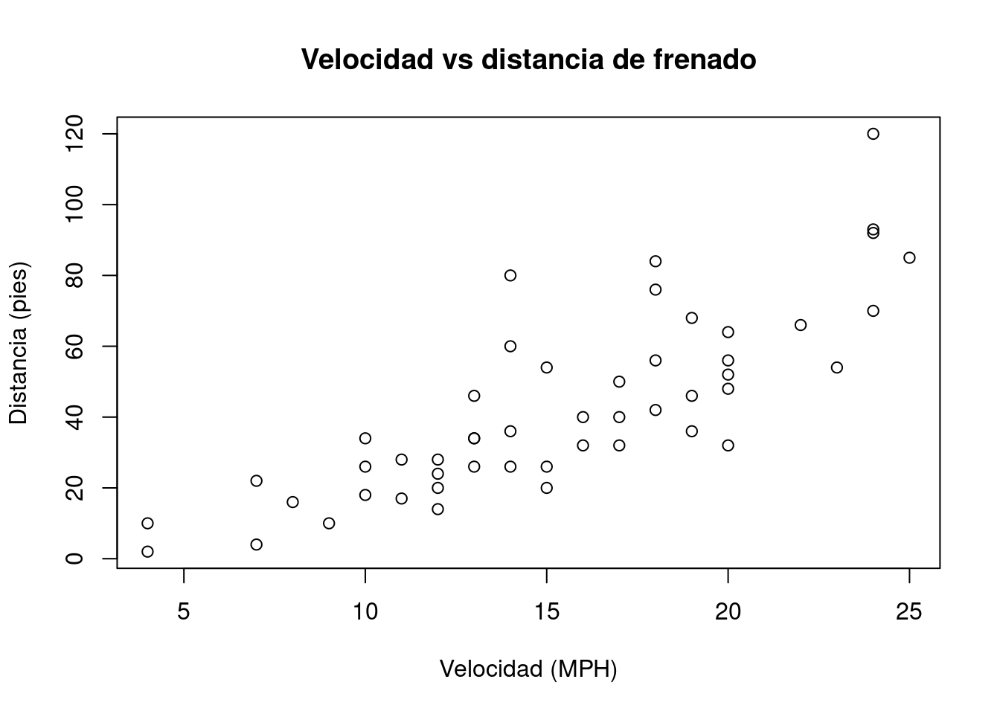

6 Quarto - sistema de publicación técnica y científica
Trabajo previo
Lecturas
Quarto - Tutorial: Hello, Quarto. (s.f.). Quarto. Recuperado el 1 de marzo de 2024, de https://quarto.org/docs/get-started/hello/rstudio.html
Introducción
Quarto es un sistema de publicación de documentos técnicos y científicos, basado en código abierto. Entre sus principales capacidades están:
- Crear contenido dinámico con los lenguajes R, Python, Julia y Observable.
- Crear documentos Markdown de texto plano o cuadernos de notas de Jupyter.
- Publicar artículos académicos, reportes, presentaciones, sitios web, blogs y libros en HTML, PDF, MS Word, ePub y otros formatos.
- Crear contenido científico, incluyendo ecuaciones, citas bibliográficas, referencias cruzadas, figuras y otros elementos.
Quarto es la siguiente generación de R Markdown, un formato que permite insertar código en R, y sus salidas, en documentos escritos en Markdown. R Markdown fue introducido por Yihui Xie en 2012, junto con el paquete knitr, cuyo propósito es facilitar la investigación reproducible en R a través de la programación literaria (literate programming), un paradigma de programación propuesto por Donald Knuth en 1984.
Los programas “literarios” (o “letrados”) están escritos como una exposición lógica en un lenguaje humano similar a la explicación de las fórmulas y ecuaciones empleadas para representar y resolver un problema en un texto de física o de matemáticas. En estos programas, se describe el análisis del problema, su solución y su implementación, intercalando código fuente entre los párrafos (y otros contenidos como imágenes, tablas, gráficos estadísticos y mapas), de forma similar a como en los textos de matemáticas se intercalan las fórmulas y las ecuaciones. La programación literaria puede mejorar enormemente un programa, ya que permite documentar ampliamente en qué consiste el problema a resolver, cómo se resuelve, cómo y por qué se adoptó cierto diseño, cómo se optimizó y cómo se implementó en un lenguaje de programación.
6.1 Anatomía de un documento Quarto
Un documento Quarto tiene tres tipos de contenido:
- Metadatos en YAML.
- Narrativa en Markdown.
- Bloques de código fuente.
6.1.1 Metadatos en YAML
Todo documento Quarto inicia con un encabezado en la sintaxis YAML (YAML Ain’t Markup Language), el cual contiene metadatos del documento como el título, el autor, la fecha de creación, el formato de salida y la estructura de la tabla de contenidos, entre muchos otros.
Un encabezado YAML comienza y termina con tres guiones (---) y contiene un conjunto de campos y valores de la forma:
---
campo01: valor01
campo02: valor02
campo0n: valor0n
---Por ejemplo, un encabezado YAML típico puede ser el siguiente:
---
title: Mi primer documento Quarto
format:
html:
toc: true
toc_float: true
---Los campos del encabezado que dependen de otros campos se anidan con sangrías de dos espacios.
Los elementos de metadatos que pueden especificarse en el encabezado, pueden variar de acuerdo al formato de salida, como puede verse en los siguientes enlaces:
Existen elementos de metadatos para muchos otros formatos de salida (OpenOffice, ePub, presentaciones, wikis, etc.), como puede apreciarse en la Referencia de Quarto.
6.1.2 Narrativa en Markdown
La narrativa proporciona estructura y contenido al documento en la forma de encabezados, párrafos, enlaces y otros elementos de la sintaxis de Markdown.
6.1.3 Bloques de código fuente
En Quarto, los bloques (chunks) de código fuente se delimitan con tres backticks, tanto al inicio como al final del bloque. Los bloques de código en R se identifican con {r} y diferentes opciones identificadas con #|. Los bloques de otros lenguajes de programación se identifican con {python} y {julia}, por ejemplo.
El siguiente es un ejemplo de bloque de código en R y su salida:
```{r}
#| label: graficacion-cars
#| include: true
#| echo: false
plot(
x = cars$speed,
y = cars$dist,
main = "Velocidad vs distancia de frenado",
xlab = "Velocidad (MPH)",
ylab = "Distancia (pies)"
)
```La opción label se utiliza para etiquetar el bloque y la de include para especificar si se desea que el bloque y sus resultados se incluyan en el documento de salida.
La documentación de las diferentes opciones disponibles para los bloques de código que utilizan el motor (engine) Knitr (el más utilizado con R) se encuentra en Code Cells: Knitr - Quarto.
6.2 ¿Cómo funciona Quarto?
Quarto se apoya en knitr y en Pandoc. knitr ejecuta el código en R (u otro lenguaje) y convierte los documentos a Markdown. Por su parte, Pandoc exporta los documentos Markdown al formato de salida deseado (ej. HTML, PDF, MS Word, MS PowerPoint). Este proceso se ilustra en la Figura 6.1.

6.3 Ejercicios
Con Quarto, cree un sitio web en GitHub Pages que muestre los gráficos que programó en la tarea 1 de este curso.
Seguidamente, se sugiere una serie de pasos para elaborar el sitio.
Cree un nuevo proyecto con la opción File - New Project - New Directory - New Project de RStudio.
En el nuevo proyecto, cree un nuevo documento con la opción File - New File - Quarto Document de RStudio. Llene los metadatos (título, autor, etc.). Elija HTML como formato de salida.
Guarde el documento con el nombre
index.qmd(RStudio asigna la extensión automáticamente).Al inicio del documento, agregue narrativa en Markdown que explique el contenido, la fuente de los datos y la dirección del repositorio en GitHub con el código fuente (este repositorio se crea en un paso posterior).
Agregue los gráficos y los comentarios de la tarea 1 mediante bloques de código en R y narrativa en Markdown. Divida el documento en secciones mediante el uso de encabezados. Se recomienda asignar una etiqueta a cada bloque de código con la opción
#| label:. Considere el uso de otras etiquetas Quarto para, por ejemplo, controlar el despliegue de las salidas y del código fuente.Presione el botón Render de RStudio para generar el archivo
index.html. Este será el arhivo que se desplegará en GitHub Pages.Cree un repositorio vacío en su cuenta en GitHub (ej.
graficos-base-r).Suba al nuevo repositorio los archivos
index.qmdeindex.html.Genere el sitio en GitHub Pages con la opción Settings - Pages - Branch - main - Save de GitHub.
Repita los pasos 6, 8 y 9 para cada modificación que realice en el documento Quarto.
6.4 Recursos de interés
Code Cells: Knitr - Quarto (opciones para bloques de código). (s. f.). Recuperado el 26 de setiembre de 2024, de Code Cells: Knitr - Quarto